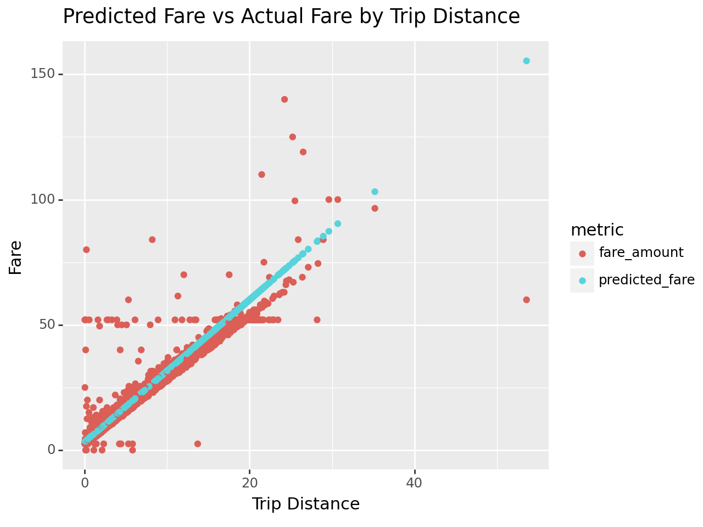

import ibis
import ibis.expr.datatypes as dt
from ibis import _, selectors as s, udf
ibis.options.interactive = TrueIn this blog post we show how to leverage ecosystem tools to build an end-to-end ML pipeline using Ibis, DuckDB and PyTorch.
Check out the live stream of this notebook below!
Let’s get started!
Define a Function to Clean Inputs
Let’s define a function to clean the data in a few different ways:
- Remove outliers (Z-score based)
- Remove negative trip distances and negative fare amounts
- Cast inputs to
float32, since that’s what PyTorch wants
We use a function here to ensure that we can run the same code on the test data set before prediction.
def clean_input(path):
return (
# load parquet
ibis.read_parquet(path)
# compute fare_amount_zscore and trip_distance_zscore
.mutate(s.across(["fare_amount", "trip_distance"], dict(zscore=(_ - _.mean()) / _.std())))
# filter out negative trip distance and bizarre transactions
.filter([_.trip_distance > 0.0, _.fare_amount >= 0.0])
# keep values that within 2 standard deviations
.filter(s.if_all(s.endswith("_zscore"), _.abs() <= 2))
# drop columns that aren't necessary for further analysis
.drop(s.endswith("_zscore"))
# select the columns we care about
.select(s.across(["fare_amount", "trip_distance"], _.cast("float32")))
)training_data = clean_input("https://storage.googleapis.com/ibis-tutorial-data/nyctaxi/yellow/yellow_tripdata_2016-01.parquet")
training_data┏━━━━━━━━━━━━━━━┳━━━━━━━━━━━━━┓ ┃ trip_distance ┃ fare_amount ┃ ┡━━━━━━━━━━━━━━━╇━━━━━━━━━━━━━┩ │ float32 │ float32 │ ├───────────────┼─────────────┤ │ 3.20 │ 14.0 │ │ 1.00 │ 9.5 │ │ 0.90 │ 6.0 │ │ 0.80 │ 5.0 │ │ 1.80 │ 11.0 │ │ 2.30 │ 11.0 │ │ 13.80 │ 43.0 │ │ 3.46 │ 20.0 │ │ 0.83 │ 5.5 │ │ 0.87 │ 7.0 │ │ … │ … │ └───────────────┴─────────────┘
Execute the Query and Convert to Torch Tensors
New in Ibis 6.0 is the to_torch method, which executes a query and returns the results as a dictionary of torch.Tensors keyed by column names.
We’ll use that to get our input data for training.
import torch
torch_training_data: dict[str, torch.Tensor] = training_data.to_torch()
torch_training_data{'trip_distance': tensor([3.2000, 1.0000, 0.9000, ..., 5.6300, 0.7700, 1.2600]),
'fare_amount': tensor([14.0000, 9.5000, 6.0000, ..., 18.5000, 5.0000, 6.5000])}Train the Model
Let’s assume for now we don’t have access to the model code. Maybe your co-worker wrote the model or it’s part of an API that you don’t control. Either way, it’s a black box to us.
The API looks like this:
import pyarrow
class PredictCabFare:
def __init__(self, data: dict[str, torch.Tensor]) -> None:
"""Initialize the model with training data."""
def train(self) -> None:
"""Train the model."""
def __call__(self, input: pyarrow.ChunkedArray) -> pyarrow.Array:
"""Invoke the trained model on unseen input."""from model import PredictCabFare
model = PredictCabFare(torch_training_data)
model.train()Define an Ibis UDF that predicts fares
Now we get to the meaty part: defining an Ibis UDF (user-defined function) that invokes our model on unseen data!
from ibis.expr.operations import udf
@udf.scalar.pyarrow
def predict_fare(distance: dt.float64) -> dt.float32:
return model(distance)Let’s run our UDF
prediction = (
clean_input("https://storage.googleapis.com/ibis-tutorial-data/nyctaxi/yellow/yellow_tripdata_2016-02.parquet")
.limit(10_000)
.mutate(predicted_fare=lambda t: predict_fare(t.trip_distance.cast("float32")))
)
prediction┏━━━━━━━━━━━━━━━┳━━━━━━━━━━━━━┳━━━━━━━━━━━━━━━━┓ ┃ trip_distance ┃ fare_amount ┃ predicted_fare ┃ ┡━━━━━━━━━━━━━━━╇━━━━━━━━━━━━━╇━━━━━━━━━━━━━━━━┩ │ float32 │ float32 │ float32 │ ├───────────────┼─────────────┼────────────────┤ │ 9.1 │ 27.0 │ 29.085516 │ │ 3.3 │ 11.5 │ 12.626410 │ │ 0.5 │ 4.0 │ 4.680637 │ │ 7.4 │ 26.5 │ 24.261295 │ │ 1.6 │ 7.5 │ 7.802191 │ │ 3.8 │ 16.0 │ 14.045299 │ │ 1.1 │ 6.0 │ 6.383303 │ │ 6.8 │ 21.0 │ 22.558630 │ │ 2.9 │ 12.0 │ 11.491301 │ │ 1.2 │ 6.5 │ 6.667080 │ │ … │ … │ … │ └───────────────┴─────────────┴────────────────┘
Prepare the Data for Plotting
Here we tidy up our data to make it easier to adjust plotting style based on the data.
In this case, we’re interested in visually distinguishing the model’s predicted fare amount from the actual fare amount so we pivot the data into a longer form which adds a string column metric that indicates the kind of fare a given row contains.
pivoted_prediction = prediction.pivot_longer(
s.contains("fare"),
values_to="fare",
names_to="metric",
)
pivoted_prediction┏━━━━━━━━━━━━━━━┳━━━━━━━━━━━━━━━━┳━━━━━━━━━━━┓ ┃ trip_distance ┃ metric ┃ fare ┃ ┡━━━━━━━━━━━━━━━╇━━━━━━━━━━━━━━━━╇━━━━━━━━━━━┩ │ float32 │ string │ float32 │ ├───────────────┼────────────────┼───────────┤ │ 9.1 │ fare_amount │ 27.000000 │ │ 9.1 │ predicted_fare │ 29.085516 │ │ 3.3 │ fare_amount │ 11.500000 │ │ 3.3 │ predicted_fare │ 12.626410 │ │ 0.5 │ fare_amount │ 4.000000 │ │ 0.5 │ predicted_fare │ 4.680637 │ │ 7.4 │ fare_amount │ 26.500000 │ │ 7.4 │ predicted_fare │ 24.261295 │ │ 1.6 │ fare_amount │ 7.500000 │ │ 1.6 │ predicted_fare │ 7.802191 │ │ … │ … │ … │ └───────────────┴────────────────┴───────────┘
Plot the Results
There are a bunch of strange and interesting data points and observations that don’t have an obvious explanation:
- There seem to be a good number of \$50-ish rides regardless of distance. What’s going on there?
- What’s going on with the extreme outliers? For instance, the 50 mile ride that only cost about \$60 or the 25 mile ride that cost about \$140.
from plotnine import aes, ggtitle, ggplot, geom_point, xlab, ylab
(
ggplot(pivoted_prediction, aes(x="trip_distance", y="fare", color="metric"))
+ geom_point()
+ xlab("Trip Distance")
+ ylab("Fare")
+ ggtitle("Predicted Fare vs Actual Fare by Trip Distance")
)
<Figure Size: (640 x 480)>Appendix: model.py
"""Linear regression model for predicting cab fares using PyTorch.
Adapted from https://gist.github.com/pdet/e8d38734232c08e6c15aba79b4eb8368#file-taxi_prediction_example-py.
"""
from __future__ import annotations
import pyarrow as pa
import torch
import tqdm
from torch import nn
class LinearRegression(nn.Module):
def __init__(self, input_dim, output_dim):
super().__init__()
self.linear = nn.Linear(input_dim, output_dim)
def forward(self, distances):
return self.linear(distances)
class PredictCabFare:
def __init__(self, data, learning_rate: float = 0.01, epochs: int = 100) -> None:
# Define the input and output dimensions
input_dim = 1
output_dim = 1
# Create a linear regression model instance
self.data = data
self.model = LinearRegression(input_dim, output_dim)
self.learning_rate = learning_rate
self.epochs = epochs
def train(self):
distances = self.data["trip_distance"].reshape(-1, 1)
fares = self.data["fare_amount"].reshape(-1, 1)
# Define the loss function
criterion = nn.MSELoss()
# Define the optimizer
optimizer = torch.optim.SGD(self.model.parameters(), lr=self.learning_rate)
# Train the model
for _ in tqdm.trange(self.epochs):
# Forward pass
y_pred = self.model(distances)
# Compute loss
loss = criterion(y_pred, fares)
# Backward pass and optimize
optimizer.zero_grad()
loss.backward()
optimizer.step()
def predict(self, input):
with torch.no_grad():
return self.model(input)
def __call__(self, input: pa.ChunkedArray):
# Convert the input to numpy so it can be fed to the model
#
# .copy() to avoid the warning about undefined behavior from torch
input = torch.from_numpy(input.to_numpy().copy())[:, None]
predicted = self.predict(input).ravel()
return pa.array(predicted.numpy())